I'm going to go step-by-step through setting up a new Rails App configured for:
- Bootstrap: as the HTML, CSS and JS framework
- Simple Forms: for my forms
- Devise: for the user model
- Heroku: for the server
Adding Gems and Setting Up Bootstrap
Step One: Create a New App
From your terminal, CD to your directory of choice and enter the commands rails new [app name]
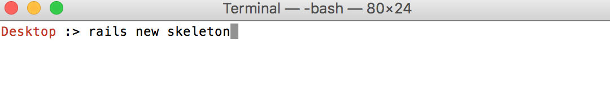 I called mine skeleton because this will serve as a template I'll resuse.
Step Two: Add and Remove Some Gems
In your Gemfile, remove the Sqlite3 gem as well as the Turbolinks gem. (Also remove the line //= require turbolinks from your app/assets/javascripts/application.js file), and add the following gems along with your current version of Ruby.
- ruby '2.2.1'
- gem 'sqlite3', group: [:development, :test]
- gem 'pg', group: :production
- gem 'rails_12factor', group: :production
- gem 'devise'
- gem 'twitter-bootstrap-rails'
- gem 'simple_form', '~> 3.0.0.rc'
Step Three: Bundle Install
Like you always do when you add a new gem.
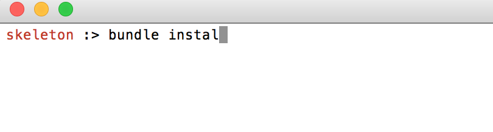
Step Four: Create a Root Path
You'll have to do so at some point, so let's get that out of the way. My "skeleton" app will primarily serve as a template for the user model, so I'm going to temporarily set it to root 'users#index' which I'll change later.
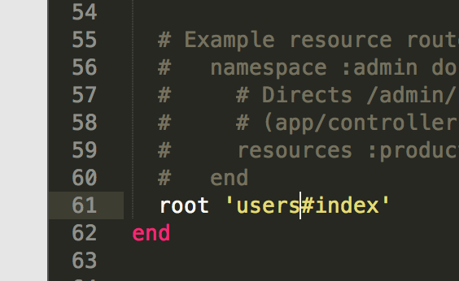
Step Five: Run the Bootstrap Generator
Now we're going to Boostrapify our app. We'll run the Bootstrap Generator using the following command:
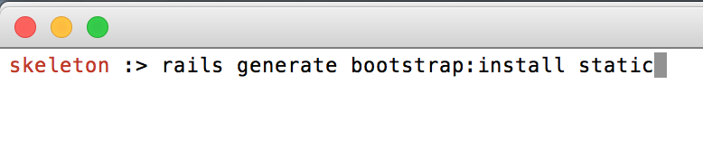
Step Five: Generate a New Layout File
We'll need to override our existing layout, which means we'll need to at -f to the end of your command.
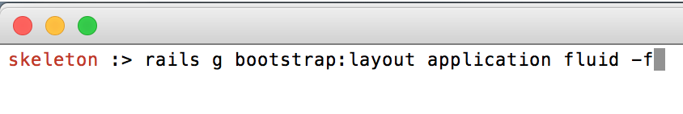
Step Five.One: Install Simple Form
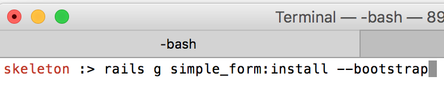
Step Six: Create a User Model with Scaffold.
I know, I know, using scaffold is no bueno. But this will get us up and running quickly just to see how these different gems work together. We can edit later.
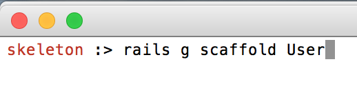
We're leaving this model empty because Devise will fill these in for us.
Run your new migration file:
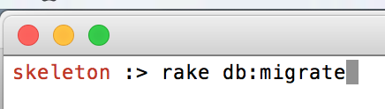
Just like we did with the layout, it's time to Bootstrapify our new model:
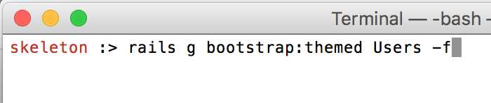
Setting Up Devise
Step Seven: First, you gotta install it:
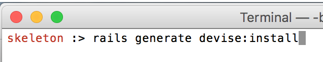
Step Eight: Follow Devise's Instructions
Once installed, Devise prompts you to take five more steps but we only have to worry about the following three (unless you're running Rails 3.2):
Configure your Default URL:
In the config/environments/development.rb file, paste the following:
config.action_mailer.default_url_options = { :host => 'localhost:3000' }
Add Flash Messages: In the:
app/views/layouts/application.html.erbfile, paste the following inside the
<body>tags:
Step Nine: Add Devise Views
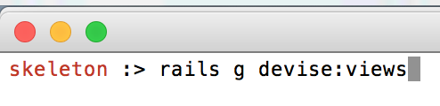
Now you should see a nice big Devise directory with a whole mess of sub-folders that you can customize later.
Step Ten: Configure Your Existing User Model with Devise
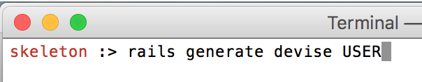
Devise will be able to add to your existing model you generated with scaffold. Don't forget to migrate:
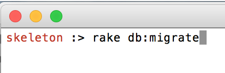
Step Eleven: Add Partials and Sign-In/Sign-Out Links
In the Devise Folder, create a sub folder named menu and a new partial file _login_items.html.erb
The full path: app/views/devise/menu/_login_items.html.erb
Do the same for registration
The full path: app/views/devise/menu/_registration_items.html.erb
Add the following code to each respectively:
Step 12: Add Home, Login and Logout Paths to Layout
Swap out the placeholders with the following code:
Step 13: Reformat Simple Forms
Back when we installed it, Simple Forms gave us instructions for integrating with Bootstrap
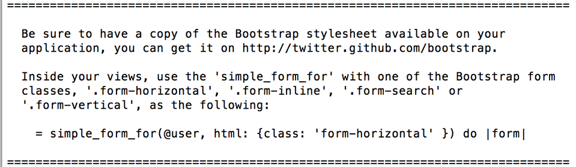
So we'll go into the appropriate new views and swap out:
With the following code:
Note: The instructions confusingly state |form| instead of |f| . I opted for 'form-horizontal' but obviously you can use other Bootstrap classes.